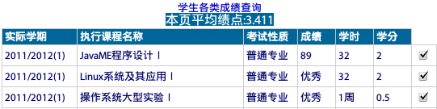
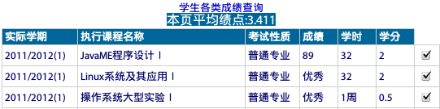

-
浙江工业大学原创教务系统助手
时间: 02/16/2012
简介:一个学校教务系统辅助浏览器小脚本(userscripts),提供在线计算绩点等功能,使用Javascript, jQuery.
链接地址:http://userscripts.org/scripts/show/121714

提供以下(包含但不限)功能:
- 登录界面用户类型自动选择为[学生]
- 任意时间选课(漏洞利用)
- 自动计算GPA
- 自动满分评教
时间: 02/16/2012
简介:一个学校教务系统辅助浏览器小脚本(userscripts),提供在线计算绩点等功能,使用Javascript, jQuery.
链接地址:http://userscripts.org/scripts/show/121714

提供以下(包含但不限)功能: